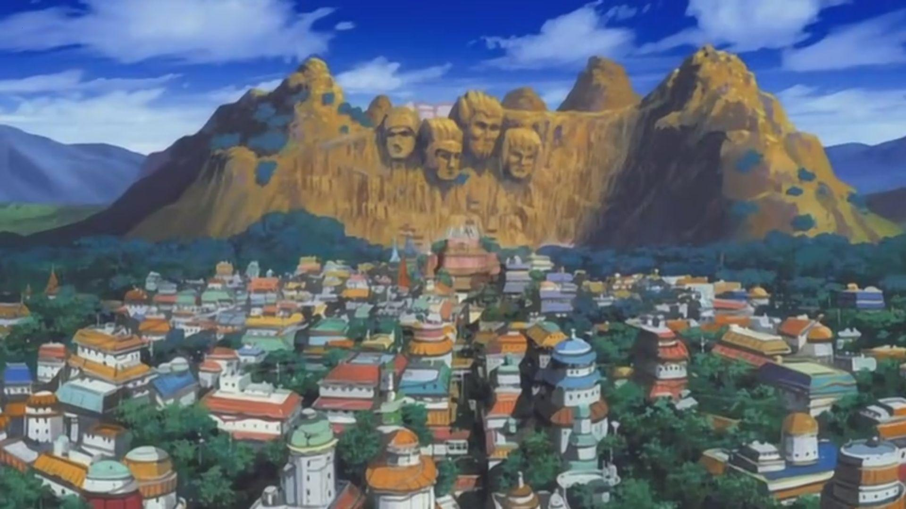
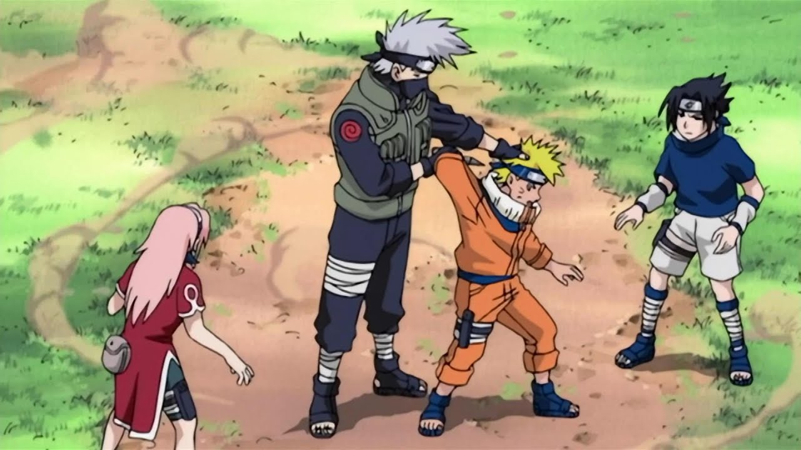

NETFLIX
NARUTO
The Village Hidden in the Leaves is home to the stealthiest ninja. But
twelve years earlier, a fearsome Nine-tailed
Fox terrorized the village before it was subdued and its spirit sealed
within the body of a boy.
Season 1
Episode 1
Enter the village hidden in leaves, where deadly ninjas roam the land
and the mischievous naruto uzumaki causes
trouble everywhere he goes.

Episode 2
Naruto finally graduates from the ninja academy and claims to know it
all
Episode 3
On the way to becoming a ninja, naruto must team up with his
classmates.
Episode 4
Now that sasuke,naruto and sakura are team mates they meet their
sensei.

Season 2
Season 3